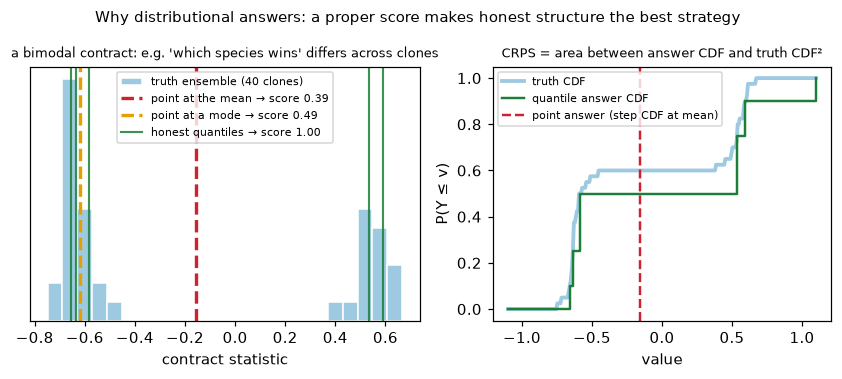
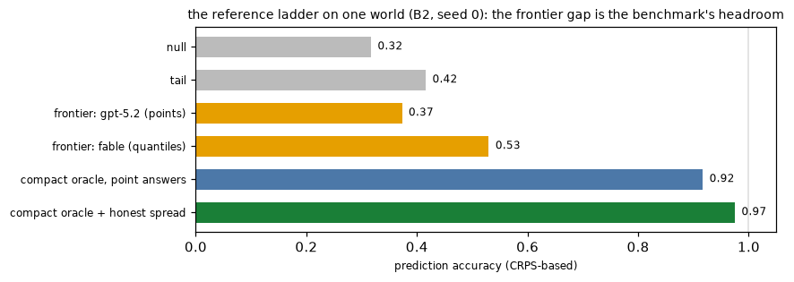
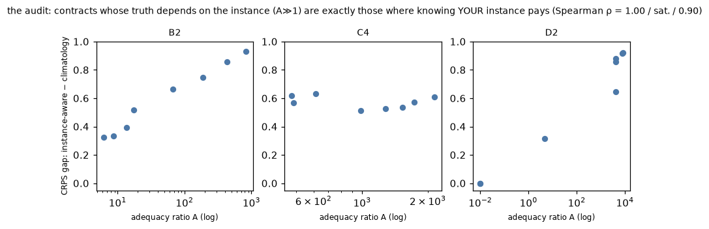

Every number on the results pages comes from the machinery on this page. Design goals: scores must be a fixed function of (world, seed, answers) — nothing adapts to the agent; truth comes from god-mode ensembles the agent never sees; and the scoring rule must be proper — the best strategy is to report what you actually believe, including your uncertainty and even "it could go two ways."
After exploration, the agent receives ~8 contracts. Each specifies, in the same anonymous port language the agent explored through:
Contracts are sampled by a fixed grammar per world family, seeded by (world, seed) only. The agent answers each contract with:
{"id": 3, "mean": -0.28, "low": -0.55, "high": 0.08,
"quantiles": {"0.1": -0.45, "0.25": -0.38, "0.5": -0.30,
"0.75": -0.20, "0.9": -0.05}} <- quantiles optionalFor each contract the harness runs the protocol on 4-8 fresh clones of the true world (god mode) and records the statistic each time: samples y1..yn, with mean μ and spread τ. Where the world is quasi-deterministic the ensemble collapses to a point; where it is genuinely stochastic — or where an emergent structure differs between draws (which species wins, whether a membrane closes) — the ensemble IS the answer, and can be broad or even bimodal.
The agent's answer is read as a predictive distribution F: the five quantiles if given, else the point answer as a degenerate distribution. The score per contract is the Continuous Ranked Probability Score, estimated from the quantiles by pinball loss:
QS(F) = 2 · mean over levels p ∈ {.1,.25,.5,.75,.9} of
mean over ensemble draws y of pinball_p(q_p, y)
pinball_p(q, y) = (y − q)·(p − 1[y < q])Raw CRPS is unfair where the world itself is noisy: even a perfect forecaster pays for irreducible spread. So we subtract the ensemble's own floor — the leave-one-out CRPS of the truth ensemble predicting itself — and map through an exponential with a per-contract scale:
accuracy = exp( − max(QS(F) − QS_floor, 0) / scale )
Properties, all verified in code:
| situation | behavior |
|---|---|
| deterministic contract, point answer | reduces EXACTLY to the legacy score exp(−|err|/scale) — old and new numbers are comparable on quasi-deterministic worlds (C/D tracks) |
| stochastic contract, honest point at the mean | no longer punished for the world's own noise (the floor is subtracted) — fairness fix vs legacy |
| bimodal truth (e.g. species A wins in 60% of draws) | point at the unphysical middle: ~0.34. Point at one mode: ~0.32. Honest bimodal quantiles: ~1.0. Structure pays; the old scoring erased it |
| overconfident narrow quantiles in the wrong place | worst case — CRPS is a proper scoring rule, bluffing certainty loses |
The scale is 3τ floored at a small fraction of the channel's dynamic range (3% for means, 1.5% for sd-statistics on the quasi-deterministic families; 10%/5% on noisy bulk worlds) — so "within a few percent of range" counts as understanding, and branch-level confusion (~full range) scores ~0. The floor keeps replication-grade answers from saturating to 1.0 for free.
The [low, high] interval is scored by a Winkler-style rule: score exp(−W/(10·scale)) where W = width + 10× the amount by which the truth escapes the interval. Narrow-and-right ≈ 1; wide-honest moderate; narrow-and-wrong ≈ 0. It is reported for every run and carries 0 reward weight by default (leaderboard comparability; an interval-honesty experiment is in REPORT addendum 17: rewarding calibration made models honest, not better).
Some worlds add preparation contracts: "steer channel c into band [lo, hi], then it must hold through a free release window." The agent submits policy code (a function of time and current readings) which runs sandboxed on 5 fresh clones; the score is the fraction of clones that end in band after release. Bands are certified at generation time to exclude the do-nothing outcome (null-policy success ≤ 0.2), so scores measure real steering. Understanding-not-luck shows in the observed bimodality of outcomes (most policies score 5/5 or 0/5).
Agents may submit a simulator — init(history) and
step(state, input) → predicted sensors. It is replayed against
every prediction contract's protocol and scored on the same statistics and
scales as answers (report-only weight). A theory that scores near the
compact-oracle line is evidence the agent's model captures the laws, not just
the answers it happened to submit.
| reference | what it knows |
|---|---|
| null | nothing — answers 0 everywhere |
| tail | the world's resting statistics (no response to drives) |
| persistence theory | "nothing ever changes": propagates the last observation |
| compact oracle | a ~40-70 line god-parameterized theory of the world's actual laws, scored through the REAL pipeline — the honest ceiling a discovering agent could reach; frontier gap below it = discovery-hardness, not representation-hardness |
| replication | runs the contract protocol once on the true world and reports what it saw — the measurement-noise ceiling |

Could the contracts miss the science? If an emergent property (which species wins; whether a boundary closes) never moves any contract's truth, agents could ace the benchmark while blind to the phenomenon. We certify against this per world: on fixed verbatim contract templates across many world instances, decompose
A = Varinstances(μ) / meaninstances(τ²)A ≫ 1 means the contract's truth depends on instance-level structure far beyond measurement noise — the phenomenon is measured. A ≈ 0 flags instance-invariant questions (fine, but they don't probe the phenomenon). Cross-check on B2 (whose truth is bimodal — which species wins varies by instance): the CRPS advantage of an instance-aware oracle over a pooled "climatology" answerer tracks A with Spearman ρ = 1.00 (D2: 0.90) — the proper scoring rule recovers the audit signal, so we can lean on CRPS generally and keep A as the cheap certificate.
